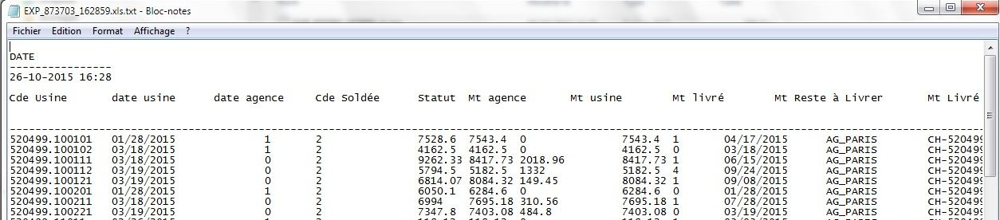
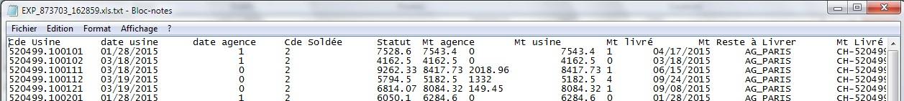
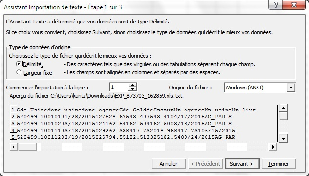
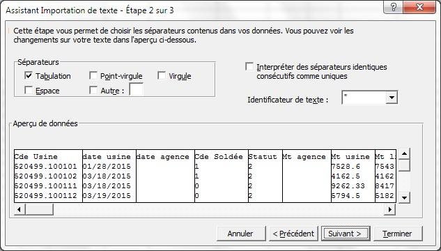
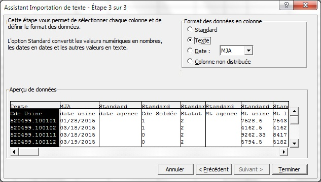
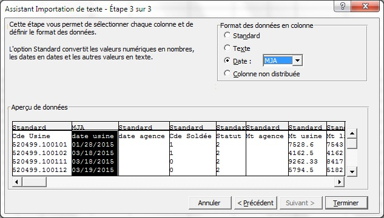
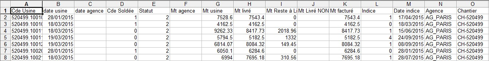

|
|||

| Autres trucs et astuces... | |
L'export vers excel ne fonctionne plus... problème sur les dates et chiffres
Depuis l'arrivée d'Office 2010, l'export vers Excel peut poser problème.Dans l'attente d'une résolution par notre prestataire externe,
Une solution, est d'ouvrir manuellement le fichier exporté.
- Fermer le fichier ouvert automatiquement dans Excel, sans enregistrer les changements
- Ouvrir l'explorateur de fichiers
- Aller dans C:\gep_log\requete\
 Attention, il est indispensable
que votre explorateur affiche les
extensions des fichiers (cf. documentation windows)
Attention, il est indispensable
que votre explorateur affiche les
extensions des fichiers (cf. documentation windows) - Rechercher le fichier exporté. (exemple : EXP_873703_162859.xls)
- Renommer le fichier exporté avec l'extension .txt (exemple : EXP_873703_162859.xls.txt)
- Ouvrir le fichier .txt avec le bloc note ou un éditeur de texte
simple
(double cliquer sur le fichier txt devrait ouvrir l'éditeur par défaut : bloc note)

- Nettoyer le fichier : supprimer les lignes d'entête et de pied de
page inutiles.
Il ne doit rester que les colonnes de données.

- Enregistrer les modification et fermer le fichier txt
 Ouvrir Excel.
Ouvrir Excel.- menu : Fichier > Ouvrir , rechercher le fichier .txt à l'emplacement où vous l'avez sauvegardé.
- Excel vous demandera quel type d'import réaliser
Choisir : Délimité

-
Choisir : Tabulation

- Indiquer les formats de chaque colonne qui posent problème
Déplacez vous avec l'ascenseur en bas des colonnes et cliquez sur la colonne dont vous souhaitez indiquer le format.
Exemple :
Texte pour la colonne avec le numéro de commande
Date : MJA pour les formats de date
Attention, vous indiquez ici le
format utilisé dans le fichier txt. Pas le format utilisé par excel.

On se déplace et on clic sur la colonne suivante...
puis la suivante, etc.
A la fin, cliquer sur Terminer

- Au final, le fichier Excel devrait s'ouvrir avec des données
exploitables: bon format de date, de chiffres, etc.
